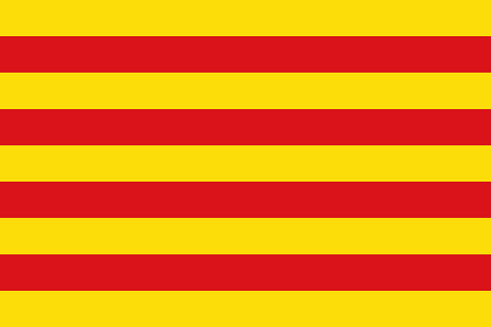

História do clube
Este artigo irá contar algumas pequenas partes da grande história do Barcelona FC, clube de futebol catalão. O artigo aborda a fundação do clube, suas primeiras conquistas, o período de ditadura na Espanha, as épocas douradas do clube, seu estádio icônico e a sua rivalidade com o clube merengue da capital espanhola.
Fundação
O clube tradicional espanhol, mais especificamente da região da Catalunha, foi fundado pelo suíço Joan Gamper no ano de 1899, no dia 29 de novembro, neste dia o futebol conheceu o que seria um dos seus maiores protagonistas em toda a história de sua existencia.

Primeiro escudo do clube.
Primeiras conquistas
As primeiras conquistas do clube catalão foram a Copa Macaya em 1902 e o tricampeonato da Copa Pirineus (1910- 1912).
O clube construiu seu primeiro estádio em 1909, dez anos após sua fundação, estádio esse que possuia capacidade para 6 mil torcedores, mas que com o crescimento exponencial do clube graças ao primeiro título de La Liga na temporada 1928-1929, logo se tornou obsoleto, fazendo com que o estádio 'Les Corts' fosse fundado com capacidade para 22 mil torcedores.
Ditadura
Nos anos de 1939-1975 a Espanha enfrentou um período de ditadura militar, que seguia os moldes do facismo, que nessa época era extremamente relevante em grande parte do continente europeu. Todo esse cenário acarretou em uma guerra civíl que acabou levando a vida de várias pessoas, inclusive a do presidente do clube catalão, Josep Sunyol, que foi caçado pelas tropas de Fanco (Ditador da Espanha nesta época) e morto a tiros por conta de sua filiação à um partido da esquerda política.
Ditador Francisco Paulino Hermenegildo Teódulo Franco y Bahamonde.
Cinco copas
A 'Temporada de cinco copas' é algo que os torcedores do Barcelona, mesmo depois de tanto tempo, se orgulham. Se trata da temporada de 1951-1952, que foi o período em que o clube ganhou 5 copas em uma mesma temporada, são elas:
- Copa del Rey
- La liga
- Copa América
- Martini Rosso
- Eva Duarte
Camp Nou
Em 1957 o Barcelona julgou necessário a construção de um novo estádio, assim surgiu o Camp Nou, um dos estádios mais icônicos do futebol mundial, com capacidade inicial para 90.000 pessoas, porém, hoje em dia a capacidade já é de 99.354 pessoas.
Camp Nou, estádio do Barcelona.
O estádio já foi palco de diversos jogos históricos, como por exemplo o 6x1 do Barcelona contra o Paris Saint German pelas oitavas de final da Champions League de 2016-2017, com destaque para o brasileiro Neymar Jr, que marcou presença com 2 gols e 1 assistência essenciais para a virada e classificação do time para as quartas de final daquela edição.
El Clássico
A maior rivalidade da Espanha, da Europa e provavelmente do mundo, Barcelona e Real Madrid, o tamanho da inimizade se da por diversos motivos, dentro e fora dos campos de futebol. O Barcelona sendo um clube da região da catalunha, que busca se desanexar do território Espanhol por diferenças culturais, pois era um reino separa do demais territórios que viriam a se tornar a Espanha, o que resultou em diferenças culturais e de idioma.
Bandeira da Catalunha.
Já o seu rival, Real Madrid, é um clube da capital espanhola e que historicamente sempre esteve muito ligado à realeza da Espanha, fazendo com que ele represente o governo Espanhol aos olhos dos torcedores do Barcelona. Atualmente o principal motivo da Espanha não ceder a independência para a Catalunha é econômico, uma vez que a região em questão representa 19% do PIB do país.
Fontes
Estes foram os sites de qual as informações foram retiradas para a realização da pesquisa: